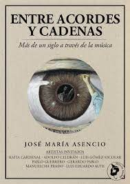
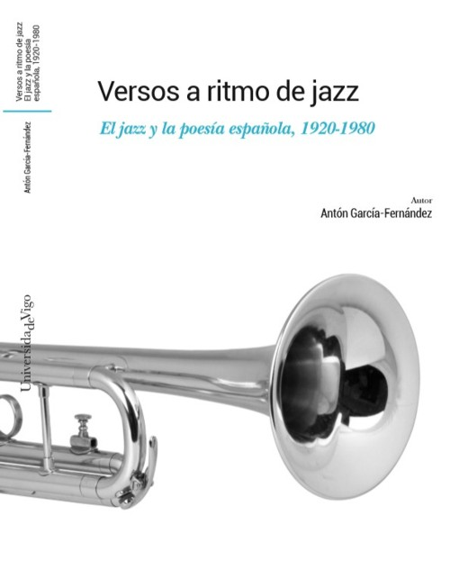

Cerrar
Inicio
Ficción
Novela negra
Novela histórica
Cuentos
Leyendas
Mitos
Fábulas
Novela romántica
Novela de ciencia ficción
Novela de aventuras
Novela fantástica
Novela de terror
Novela gráfica
No ficción
Salud, deporte y bienestar
Autoayuda y desarrollo personal
Aficiones y habilidades
Cocina
Viajes
Arte y música
Libros de No Ficción
Arte y música

Entre acordes y cadenas
Una Novela de Jose Maria Asencio

Versos a ritmo de jazz
Una novela de Antón García Fernández
La musa al oído
Una novela de Jose Maria Asencio
El silencio musical en la literatura
Una novela de Daniela Hernández Gallo
Volad canciones volad
Una novela de Hernandez González Lucini